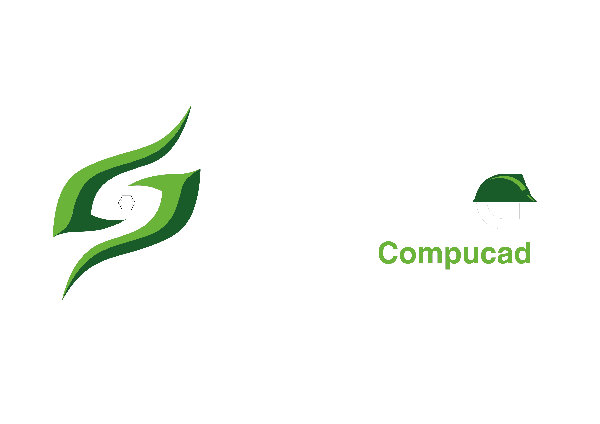

Extracción
Avance general
Modo claro
Extracción.
Conectando con Autodesk Forma…
Revit
Autodesk Forma
Autodesk APS
Sohersa Cloud
Dashboard
Modelos
0
/10
Elementos
0
Valores extraídos
0
Con fechas de obra
0
Leído de Autodesk → útil
0 MB
Modelos del proyecto
Bitácora del servidor
Datos llegando a Sohersa Cloud
Modelo
Categoría
Tipo
Marca
Planeación
Ejecución
Cantidad
Extracción completa
Descargar JSON
¡Ahora sí, analicemos! →
Modelo federado.
Modelos en pantalla
Mostrar todos
Ocultar todos
Modelo federado
Cargando modelo…
Vista inicial
Pantalla completa
Colorear por avance
Aislar ejecutados
Restablecer
Cargando el modelo desde Autodesk Construction Cloud…
No se pudo cargar el modelo.
Abrir en Autodesk Viewer
Avance estructural.
Leyendo el modelo…
Visor 3D del modelo
Cargando modelo…
Vista inicial
Pantalla completa
Vinculado al dashboard
Colorear por avance
Colorear por partida
Aislar ejecutados
Restablecer
Cargando el modelo desde Autodesk Construction Cloud…
No se pudo cargar el modelo.
Abrir en Autodesk Viewer
Avance general.
Ponderado por costo estimado
Leyendo los modelos…
Modelo federado
Cargando modelo…
Vista inicial
Pantalla completa
Colorear por avance
Colorear por disciplina
Aislar ejecutados
Restablecer
Cargando los modelos desde Autodesk Construction Cloud…
No se pudo cargar el modelo.
Modelos en pantalla
Mostrar todos
Ocultar todos